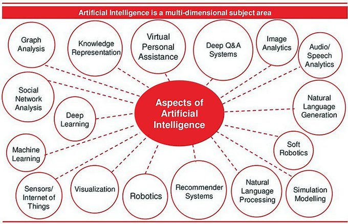
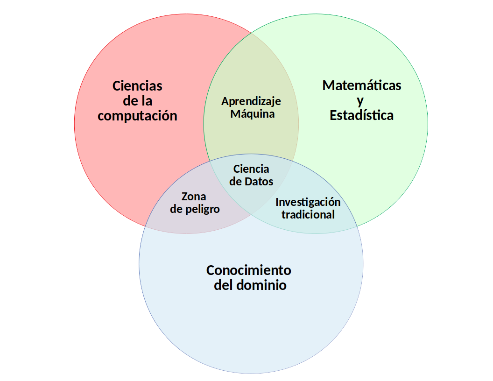
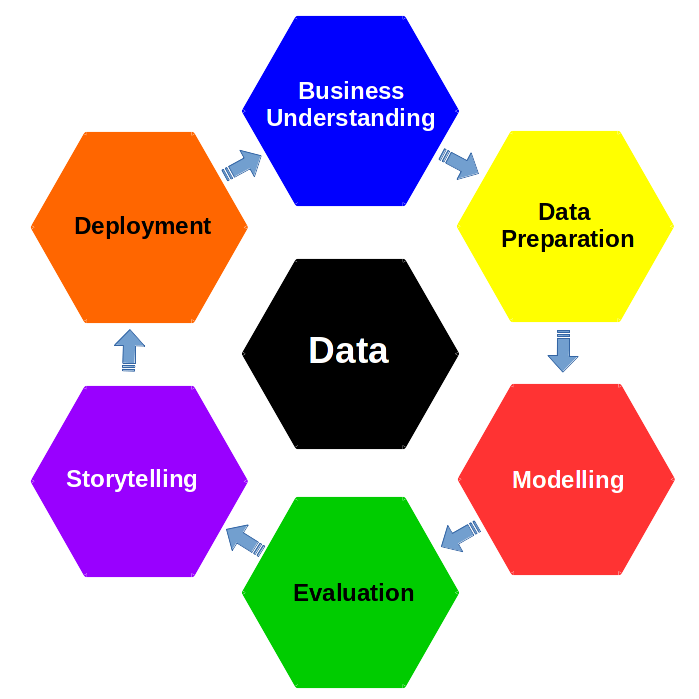

1 Introducción
En el enorme campo de la tecnología, una revolución ¡¡¡en forma de tsunami!!! está transformando la manera en que las máquinas interpretan y toman decisiones. A lo largo de este curso llevaremos a cabo un apasionante recorrido por el universo del Aprendizaje Automático (ML, de “Machine Learning” en inglés). Te invitamos a sumergirte en un campo que ha revolucionado la Inteligencia Artificial (IA, o AI, de “Artificial Intelligence” en inglés), dando forma al futuro de la tecnología y la ciencia de datos. Desde sus cimientos más elementales hasta algunas de las técnicas más avanzadas, exploraremos cómo las máquinas pueden aprender de los datos y mejorar su rendimiento en tareas que abarcan desde el reconocimiento de patrones hasta la toma de decisiones complejas. A lo largo de varios temas, desvelaremos los secretos que se esconden en los algoritmos que impulsan la IA moderna, permitiéndote aprender cómo aplicar estas técnicas para resolver desafíos del mundo real.
1.1 Revoluciones industriales
En la encrucijada de la historia y la tecnología, hemos sido testigos de cuatro revoluciones industriales que han moldeado radicalmente la forma en que vivimos, trabajamos y nos relacionamos con el mundo que nos rodea. Estas transformaciones, conocidas como las “Cuatro Revoluciones Industriales”, han sido impulsadas por avances en la automatización, la maquinaria, la informática y la conectividad, y han desencadenado un cambio radical en la industria y la sociedad en su conjunto.
Despliega los siguientes paneles para averiguar más sobre estas cuatro revoluciones:
La Primera Revolución Industrial marcó un punto de inflexión en la historia de la humanidad al introducir la mecanización en la producción y transformar la economía global. Esta revolución tuvo su inicio en el siglo XVIII, concretamente en 1760 en Gran Bretaña, y se caracterizó por la adopción masiva de la máquina de vapor como elemento central del desarrollo industrial. La invención de la máquina de vapor, principalmente por James Watt, desencadenó un cambio sin precedentes en la producción y la industria. La máquina de vapor permitía la generación de energía a partir del vapor de agua, lo que revolucionó los procesos de fabricación al reemplazar la dependencia de la fuerza humana y animal en la producción. Una de las consecuencias más notables fue la creación de fábricas. Es importante resaltar que antes de este período, la producción era en su mayoría artesanal y descentralizada, pero con la mecanización impulsada por la máquina de vapor, se pudo concentrar la producción en instalaciones específicas, las fábricas. Esto dio lugar a una mayor eficiencia en la producción y la capacidad de fabricar productos a mayor escala. Esta revolución trajo consigo avances en la industria textil, la minería, el transporte y la agricultura. La producción de bienes se volvió más rápida y económica, lo que llevó a un aumento en la disponibilidad de productos manufacturados para la población en general.
La Segunda Revolución Industrial se desarrolló a partir de la década de 1860 y marcó una evolución significativa en la forma en que se llevaba a cabo la producción industrial. Uno de los elementos más destacados de esta revolución fue la adopción generalizada de la electricidad como fuente de energía, lo que permitió la creación de nuevas industrias y la producción en masa de bienes en una escala antes nunca vista. La electricidad revolucionó la forma en que se generaba energía, reemplazando gradualmente la dependencia de la máquina de vapor. Esto permitió un mayor control y eficiencia en los procesos industriales, lo que a su vez impulsó el crecimiento de industrias clave como la siderurgia (producción de acero) y la industria petrolera. La disponibilidad de energía eléctrica también condujo al desarrollo de maquinaria eléctrica y electrónica, lo que mejoró aún más la producción y la automatización de las tareas. Uno de los conceptos más emblemáticos fue la introducción de líneas de montaje, un enfoque de producción en serie que revolucionó la fabricación. Henry Ford es conocido por popularizar este concepto en la industria del automovil, lo que permitió la producción eficiente y económica de automóviles en masa. Este enfoque también se aplicó a otras industrias, lo que hizo que la producción en serie fuera una práctica común.
La década de 1960 marcó el comienzo de una de las revoluciones más impactantes en la historia de la tecnología y la informática: la Revolución Digital. Este período de transformación fue impulsado por avances significativos en la electrónica y la informática, y se caracterizó por la creación de la computadora personal, el desarrollo de semiconductores y el surgimiento de Internet.
-La Computadora Personal: A fines de la década de 1960, surgieron las primeras computadoras personales. Aunque eran dispositivos rudimentarios en comparación con las computadoras modernas, estas máquinas permitieron que las personas tuvieran acceso a la informática en sus hogares y oficinas, lo que allanó el camino para la revolución digital al democratizar el acceso a la tecnología.
-Semiconductores: La Revolución Digital fue impulsada en gran medida por avances en la tecnología de semiconductores. La miniaturización de componentes electrónicos permitió la creación de dispositivos más pequeños, eficientes y asequibles. La invención del circuito integrado (o microchip) en 1958 fue un hito clave que facilitó el desarrollo de dispositivos electrónicos más poderosos y compactos.
-Internet: Aunque la gestación de Internet comenzó en la década de 1960 con la creación de ARPANET (una red de comunicación militar), fue en esta década cuando Internet comenzó a tomar forma como una red global. La creación del Protocolo de Control de Transmisión/Protocolo de Internet (TCP/IP) en la década de 1970 allanó el camino para la expansión de la red. A lo largo de la década de 1960, los investigadores avanzaron en la comunicación por computadora y desarrollaron los primeros esbozos de lo que se convertiría en la World Wide Web.
-Revolución Electrónica: La Revolución Digital también vio avances significativos en la electrónica, como la creación de circuitos integrados, transistores y microprocesadores. Estos componentes permitieron la creación de dispositivos electrónicos más poderosos y eficientes, lo que impulsó la innovación en áreas como la informática, las comunicaciones y la electrónica de consumo.
La Cuarta Revolución Industrial, representa un capítulo fundamental en la historia de la tecnología y la industria. Emergió en torno a 2016 y ha sido impulsada por una serie de tecnologías avanzadas que han transformado radicalmente la forma en que operan las empresas y la sociedad en general.
Aquí se detallan algunos de los aspectos clave de la Industria 4.0:
-Digitalización: La digitalización es la piedra angular de la Industria 4.0. Se refiere a la conversión de procesos, datos y objetos en formatos digitales. Esto ha permitido una mayor eficiencia, precisión y velocidad en la toma de decisiones y en la ejecución de tareas.
-Inteligencia Artificial: En la Industria 4.0, la IA se utiliza para automatizar procesos, optimizar la producción y prever problemas antes de que ocurran.
-Robótica: Los robots desempeñan un papel fundamental en la fabricación y la logística en la Industria 4.0. Estos robots son cada vez más autónomos y colaborativos, trabajando junto a los humanos en tareas de producción y manipulación.
-Internet de las cosas (IoT): El IoT implica la conexión de objetos y dispositivos a través de Internet. En la Industria 4.0, los sensores y dispositivos IoT recopilan datos en tiempo real, permitiendo un control y una toma de decisiones más precisos.
-Aprendizaje Automático: En la Industria 4.0, el ML se aplica para mejorar la calidad y la eficiencia de la producción, así como para la detección temprana de problemas.
-Big Data: La recopilación y el análisis de grandes volúmenes de datos son esenciales en la Industria 4.0. El Big Data permite identificar patrones, tendencias y oportunidades que antes eran difíciles de detectar.
-Computación en la Nube (Cloud Computing): La infraestructura en la nube proporciona almacenamiento y procesamiento escalables, lo que facilita el acceso y el uso de datos y aplicaciones desde cualquier lugar.
-Hiperconectividad: La hiperconectividad es la interconexión de dispositivos, sistemas y personas a través de Internet. Esto crea una red global que permite la comunicación y la colaboración en tiempo real.
La Industria 4.0 ha revolucionado la forma en que las empresas operan y compiten. Ha impulsado la eficiencia, la productividad y la personalización en la producción y los servicios. Al mismo tiempo, presenta desafíos en términos de seguridad cibernética, privacidad de datos y adaptación de la fuerza laboral. A medida que la Industria 4.0 continúa evolucionando, se espera que tenga un impacto aún mayor en la economía global y la sociedad en general.
1.2 La Inteligencia Artificial
Existen varias definiciones de IA, todas ellas relevantes:
- La automatización de actividades que asociamos con la forma de pensar del ser humano (Bellman 1978)
- El estudio de los mecanismos que hacen posible percivir, razonar, y actuar (Winston 1992)
- El arte de crear máquinas que realicen tareas que requieren de inteligencia cuando son realizadas por seres humanos (Kurzweil et al. 1990)
- Estudio del diseño de agentes inteligentes (Poole, Goebel, y Mackworth 1998)
Pueses buscar otras posibles definiciones en este libro (Russell 2010). Nosotros proponemos la siguiente:
La Inteligencia Artificial es un campo de la informática que se enfoca en el desarrollo de sistemas y programas informáticos capaces de realizar tareas que, cuando se ejecutan por parte de seres humanos, requieren inteligencia y aprendizaje. Estos sistemas de IA pueden aprender de datos, adaptarse a nuevas situaciones, tomar decisiones, resolver problemas y realizar tareas específicas sin intervención humana directa. La IA busca imitar y replicar procesos cognitivos y de toma de decisiones humanas, permitiendo a las máquinas realizar actividades que normalmente requerirían la inteligencia humana.
1.2.1 Organización de la IA
Exiten varios modos de abordar una organización de la IA. Podemos hablar de diferentes áreas en las que organizar la IA:


A día de hoy, no hay una organización exclusiva, aceptada unánimemente para la IA. Os animamos a que busques otras, alternativas a las anteriores, en Internet.
Como puedes ver, la IA es un campo diverso que se beneficia de una variedad de disciplinas interconectadas. Estas áreas complementarias se combinan para dar forma al espectro completo de la IA, cada una con su enfoque y aplicaciones únicas:
Robótica: La robótica se centra en la creación y programación de máquinas capaces de interactuar con su entorno de manera autónoma. La IA desempeña un papel crucial en la toma de decisiones de los robots y su capacidad para aprender y adaptarse.
Aprendizaje Automático: El Aprendizaje Automático (objeto fundamental de estos apuntes) es una subdisciplina de la IA que se centra en el desarrollo de algoritmos y modelos que pueden aprender de datos y realizar tareas sin estar explícitamente programados. Esto es fundamental en multitud de aplicaciones, muchas de las cuales trataremos a lo largo de este curso.
Procesamiento de Lenguaje Natural (NLP): El NLP se ocupa de la interacción entre las computadoras y el lenguaje humano. Se utiliza en la traducción automática, chatbots, análisis de sentimientos y otras aplicaciones relacionadas con el lenguaje.
Visión por Computador: La visión por computador se centra en la capacidad de las máquinas para comprender y procesar imágenes y videos. Esto se aplica en reconocimiento facial, conducción autónoma y diagnóstico médico, entre otros.
Lógica Difusa: La lógica difusa permite manejar la incertidumbre y la imprecisión en la toma de decisiones. Se utiliza en sistemas de control automático y en aplicaciones donde la información es vaga o ambigua.
Redes Neuronales Artificiales: Inspiradas en el funcionamiento del cerebro humano, las redes neuronales artificiales son modelos de aprendizaje profundo que se utilizan en una variedad de aplicaciones, desde el reconocimiento de voz hasta el procesamiento de imágenes. De ellas surge el llamado Deep Learning.
Reconocimiento de Patrones: El reconocimiento de patrones implica la identificación de estructuras y tendencias en datos. Esto es fundamental en aplicaciones como la bioinformática, la seguridad y la análisis financiero.
Computación Evolutiva: La computación evolutiva se basa en principios biológicos como la selección natural y la evolución para optimizar algoritmos y resolver problemas complejos.
Estas áreas interconectadas colaboran para impulsar el avance de la IA en diversas aplicaciones, desde la automatización industrial y la atención médica hasta la conducción autónoma y la atención al cliente. A medida que la IA continúa evolucionando, la integración de estas disciplinas se vuelve cada vez más importante para desarrollar sistemas inteligentes y capaces de adaptarse al mundo real. En este curso iniciamos un camino en una de estas áreas, el Aprendizaje Automático.
Despliega el siguiente panel para averiguar si tienes los cimientos necesarios (o aún no) para convertirte en un experto en IA.
Buenos conocimientos de matemáticas
Familiaridad con los lenguajes de programación.
Capacidad para escribir algoritmos de búsqueda de patrones y aprendizaje.
Buena capacidad de análisis.
Buenos conocimientos de Estadística y modelización.
Capacidad para aprender nuevos algoritmos de Machine Learning y Deep Learning.
Competencias no tecnológicas.
1.3 Aprendizaje Automático
Es el momento de definir, de manera formal, esa parte de la IA que ha aparecido en varias ocasiones. El Aprendizaje Automático o Machine Learning. Es el eje central de todo el libro que vamos a construir.
Podemos definir el Aprendizaje Automático, Aprendizaje Máquina o Machine Learning (ML) como una rama de la IA que se centra en el uso de datos y algoritmos para replicar la forma en la que aprenden los seres humanos, con una mejora gradual de su rendimiento.
El ML, con su capacidad para extraer conocimiento y tomar decisiones a partir de datos, se ha convertido en la herramienta esencial que impulsa la innovación y la eficiencia en la industria y la economía. A medida que avanzamos dentro de la cuarta revolución industrial, en la que la convergencia de lo físico, lo digital y lo biológico es inevitable, el ML desempeña, cada vez más, un papel central en la creación de sistemas más inteligentes, la automatización de tareas complejas y la toma de decisiones informadas. A continuación vamos a averiguar el papel fundamental que juega el ML dentro de la ciencia de datos.
1.3.1 Ciencia de datos
La última revolución asociada a la IA ha estado enmarcada por el crecimiento en el uso del ML dentro del contexto de la ciencia de datos (Kelleher, Mac Namee, y D’arcy 2020).
La ciencia de datos es un área interdisciplinar que abarca un conjunto de principios, problemas, definiciones, algoritmos y procesos cuyo objetivo es extraer conocimiento no obvio y útil a partir de un conjunto de datos.
Pero, ¿qué áreas, métodos y técnicas están implicados en la ciencia de datos?. En primer lugar, presentemos los aspectos teórico y prácticos que sustentan un proyecto real de ciencia de datos. Para ellos recurrimos a la Figura Figura 1.2 (a) que representa el clásico diagrama de la ciencia de datos, como una disciplina en la intersección de tres aspectos fundamentales. Para saber más sobre estos aspectos, desplegad los paneles siguientes:
Conocimientos de Matemáticas, y más concretamente de Estadística, son necesarios para analizar correctamente los datos disponibles. Conceptos como intervalo de confianza, histograma de frecuencias, contraste de hipótesis, espacio de características, métrica, hiperplano separador, error de clasificación, p_valor, etc. han de formar parte del conocimiento de todo científico de datos. Un equipo de ciencia de datos ha de contar con uno o varios expertos en Matemáticas y Estadística. Un buen libro de referencia para dominar los conceptos fundamentales en el ámbito matemático y estadístico que son necesarios en ciencia de datos es (Hastie et al. 2009). Además disponéis de esta versión online (James et al. 2013), similar pero más enfocada al análisis de datos. ¿Lo conocías ya?
Estudio del diseño y la arquitectura de los ordenadores y su aplicación en el campo de la ciencia y la tecnología, incluyendo el hardware, el software y las redes de comunicación. Un experto en ciencias de la computación ha de dominar lenguajes de programación como Python, JavaScript, C++, así como los elementos fundamentales que hacen que estos lenguajes funcionen. Algunas referencias útiles para estudiar estos lenguajes son (Hao y Ho 2019), (Osmani 2012) y (Oualline 2003). De igual modo, el científico de datos, ha de conocer ámbitos como los diferentes sistemas operativos, redes, seguridad, algoritmos y arquitectura de ordenadores. Un equipo de ciencia de datos ha de contar con uno o varios expertos en Ciencias de la Computación.
Representa el problema que deseamos estudiar, la organización que lo proporciona y su dominio de aplicación. Existen casos de éxito de la ciencia de datos en prácticamente todos los dominios de interés que podamos mencionar: medicina, ciudades inteligentes, energía, telecomunicaciones, finanzas, seguros, ganadería, agricultura, ciencias sociales, ciberseguridad, etc. Un equipo de ciencia de datos ha de contar con uno o varios expertos en el dominio de aplicación. Estos expertos han de implicarse, fuertemente, en el problema que se quiere resolver. En (Kelleher, Mac Namee, y D’arcy 2020) podéis encontrar ejemplos muy interesantes de cómo la ciencia de datos es aplicada en diferentes dominios.
En muchas ocasiones se asocia el término ML con el término ciencia de datos. Sin embargo, hay una gran diferencia marcada por el conocimiento del dominio. Digamos que un experto en ML conocerá una gran variedad de algoritmos de aprendizaje, será experto en limpieza y depuración de datos, tendrá amplios conocimientos de programación, etc. Sin embargo, para conseguir modelos útiles dentro de un dominio de aplicación ha de añadir a sus habilidades un conocimiento del dominio. Y esto no es inmediato. El ML está relacionado con usar las características adecuadas para construir los modelos adecuados que realicen las tareas adecuadas dentro del dominio adecuado (Flach 2012).


Por su parte, la Figura Figura 1.2 (b) basada en CRISP-DM: “Cross Industry Standard Process for Data Mining” (Wirth y Hipp 2000) presenta el ciclo de vida que todo proyecto de ciencia de datos debería seguir. El inicio del proyecto viene dado por la definición de los objetivos de la organización. A continuación, se recogen y gestionan los datos. Como siguiente paso, se desarrollan y evalúan algoritmos matemáticos sobre los datos. Los resultados de estos modelos se presentan a los expertos en el dominio de aplicación para su posterior integración dentro de la organización. Nótese que el proyecto puede tener varias iteraciones, volviendo a alguna de las etapas anteriores siempre que una etapa posterior así lo requiera. Para saber más detalles sobre estas etapas investigad los paneles siguientes:
Entender el negocio es el primer paso en el proceso. Con ayuda de expertos en el dominio, se definen las preguntas a responder con el proyecto (definición de objetivos de la entidad responsable del proyecto). Una vez comprendido el negocio se designa una solución analítica para abordar el problema. En esta etapa las reuniones entre los matemáticos, informáticos y los expertos del dominio (habitualmente trabajadores con grandes conocimiento del problema que se trata de abordar) son frecuentes, necesarias y (casi) nunca, suficientes.
Mediante técnicas informáticas, se recopilan y se preparan los datos para su posterior análisis. Podremos hablar de Big Data si los datos se caracterizan por su volumen, variedad o velocidad de procesamiento. Todo proceso de Ciencia de Datos es un proceso de aprendizaje en torno al dato. Las preguntas no surgen de los datos, pero se necesitan datos para responderlas. Es esta la etapa en la que trataremos una parte fundamental de todo el proceso: el análisis exploratorio de datos. Podrás estudiar más sobre cómo preparar los datos para etapas posteriores en el tema 3 de este libro.
A través de métodos matemáticos y estadísticos se estudian y analizan los datos, se construyen algoritmos y se aplican modelos. Es la etapa asociada a los modelos de ML que trataremos en los temas 5,7 y 8.
Se definen medidas de rendimiento de los modelos que permitan su evaluación tanto por parte del desarrollador como por parte del cliente. Trataremos estas medidas en el tema 6 de nuestro curso.
Se presentan los resultados buscando la comprensión por parte del cliente. No se trata únicamente de aplicar modelos complejos que nadie, más allá del desarrollador o experto matemático, pueda comprender. Muy al contrario, existe en la actualidad una corriente de investigación orientada a construir métodos capaces de ser explicables, junto con otras técnicas para convertir en entendibles los resultados obtenidos por los más complejos algoritmos matemáticos. Hablaremos de explicabilidad de modelos en el último tema del curso.
La solución final se convierte en un producto que podrá ser comercializado. Los modelos de ML se construyen para un propósito dentro de una organización. La integración de este modelo dentro del proceso de la organización debería de ser el último paso del proyecto de ciencia de datos.
1.4 Técnicas y métodos de ML
Tal y como hemos indicado, la etapa de aprendizaje mediante modelos de ML cobra todo su interés una vez los datos han sido adquiridos, almacenados y preparados de modo correcto. Es el momento de aplicar técnicas y algoritmos de ML, en búsqueda de los objetivos fijados en etapas anteriores del proyecto. Como ya indicamos, el ML se refiere al uso de las características correctas para construir los modelos correctos que desarrollen las tareas correctas.
El ML es un subcampo interdisciplinar de la IA que desarrolla tanto el fundamento matemático como las aplicaciones prácticas de los sistemas que aprenden de los datos con alguna clase de tarea y alguna medida de rendimiento.
En general, dispondremos de un conjunto de observaciones con un número de variables o características, medidas sobre dichas observaciones. Estos atributos, que caracterizan a las observaciones, serán usados por los modelos de ML para aprender a realizar las tareas que les sean encomendadas. Podemos dividir los algoritmos de ML en dos grandes grupos según la existencia o no de una variable que corresponda a una clase etiquetada:
Datos etiquetados: una de las variables recoge la etiqueta de la observación. Esta etiqueta refleja el valor de la variable objetivo y es el atributo que normalmente deseamos ser capaces de predecir mediante el modelo. Dicha variable recibe el nombre de variable objetivo, o variable respuesta. El ML con datos etiquetados se denomina Aprendizaje Supervisado (Supervised Learning) y lo trataremos en el tema 7 de este curso. Si la etiqueta es cualitativa la tarea se denomina clasificación. Si la etiqueta es cuantitativa la tarea se llama regresión.
Datos no etiquetados: no se recoge ninguna etiqueta. El ML utilizando datos no etiquetados se llama Aprendizaje No Supervisado y será tratado en el tema 5 de este curso. Los algoritmos de agrupamiento o Clustering examinan los datos para encontrar grupos de observaciones que son más similares entre sí respecto a las observaciones de otros grupos.
Para concluir esta introducción, párate un momento en la siguiente tabla que presenta algunos ejemplos de aplicación de ML junto con los algoritmos empleados.
| Ejemplo | Aprendizaje Máquina | Algoritmos |
|---|---|---|
| Identificación de spam | Clasificación: decidir si un correo es spam o no | Árboles de decisión, Naïve Bayes, Regresión Logística, Máquinas de Vectores Soporte |
| Predecir cuánto incrementará las ventas de una compañía una campaña de marketing | Regresión: predecir valores futuros de una variable cualitativa | Regresión Lineal |
| Identificar páginas web que son visitadas a menudo durante la misma sesión | Reglas de asociación: encontrar correlaciones o causas potenciales de los efectos vistos en los datos, encontrar objetos que tienden a aparecer en el conjunto de los datos | Reglas de asociación |
| Identificar usuarios con el mismo comportamiento | Clustering: encontrar objetos semejantes entre sí y diferentes de los objetos de otros grupos | K-medias |
| Hacer recomendaciones de productos para un cliente basadas en las compras de otros clientes similares. | Sistemas de Recomendación: predicción de la propiedad de un dato basado en el dato más similar | Vecinos más cercanos, Filtrado colaborativo |